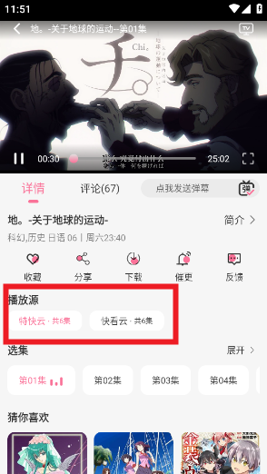

MiFun 用了大半年，说说那些当初没料到的事
从随便装一个看番工具到成为每晚必开的应用，这几个月里有些地方越用越顺手，有些地方却慢慢让人烦了。
当初装 MiFun 其实没多想——手机上原来的看番 App 突然大面积失效，朋友随手给推了个替代，去mifun下载拿了安装包就装了。去mifun官网上扫了一眼分类挺全，第一印象是界面清爽，分类列表排版规整，不像某些同类应用堆得满屏都是广告位。说不上惊艳，但够用，就一直留着没删。
这一留就是大半年。中间经历了好几个版本更新，从最初的"能看就行"到现在它在我手机里占了一个常驻的位置，有些变化是慢慢感觉到的，不是一两天能看出来的。
越用越顺手的地方
播源切换这个功能，我以前觉得是"锦上添花"，现在才发现它其实是这类应用的刚需。
刚装那阵子看番很少碰到卡顿，偶尔碰到也没当回事——大不了退出去刷个短视频再回来。后来追一部更新比较勤的番，某一集连续换了三次播源才加载出来。那时候才开始认真研究这个功能：播放页点开中央的控制栏，找到线路按钮，点一下就跳出可选的播源列表，换了之后视频重新加载，进度会丢，但至少能继续看下去。
用多了之后渐渐摸出一点门道：有些播源首帧出来快但画质只有标清，有些画质高清但加载要等个十几秒。遇到喜欢的番我宁愿等高清源，要是随便补番就选最快能出来的。现在每次点开播放页，我会下意识先扫一眼当前播源的加载速度和画质，心里有个预期，不会等到卡住了才慌慌张张换源。

缓存功能也是慢慢才用起来的。刚装时觉得"在线看就好了"，直到某次出差坐高铁，四个多小时没网，提前缓存了三集番剧才让那段路不那么难熬。现在养成了习惯：WiFi 环境下点开想追的番，顺手点一下缓存，不用选太多，挑个三五集就行，占不了多少空间。缓存完成后在"我的"页面有专门的离线列表，没网的时候直接点开继续看，连加载都不用等。
设置里的夜间模式我几乎是立刻就开了，但"跟随系统"这个选项是三个月后才注意到的——后来去mifun文档翻了一下设置解析才发现这个省心选项。之前一直手动切换，早上出门关晚上睡前开，麻烦是麻烦但没多想。某次系统更新后发现 MiFun 跟手机的深色模式自动同步了，才恍然大悟原来有这么省心的选项。现在主题一直设成跟随系统，再也没手动切过。
慢慢暴露的问题
说好的说完说不好的。有些毛病不是第一天就有，是用久了才让人烦的。
缓存文件会占空间这件事，我知道，但没料到它长得这么快。手机存了大概二十来集番剧，某天看存储空间直接红了，才发现 MiFun 的缓存占了快三个 G。清理缓存按钮倒是好找，设置页里一键就清了，但清完下次看还得重新下载——这个"清还是不清"的纠结每次都要经历一遍。
评论区我是后来才开始逛的。弹幕跟着时间轴飘确实热闹，但想认真讨论剧情还是得看评论区。问题是评论区的质量参差不齐：有些长文分析写得挺到位，也有些水评论纯粹是刷"签到""空降"，还有剧透党管不住嘴，追更新的时候特别怕点开就被剧透过。举报功能倒是有，长按就能选理由提交，但也总不能每条都举报。现在养成了追更期间不逛评论的习惯，等一话看完了再点进去翻。
还有个小细节：某些播源的画质选项会悄悄缩水。之前追的一部番，前几集有超清选项，看到一半突然只剩高清，我以为是番剧本身的问题，后来换了个播源才发现超清还在。不是什么大问题，但每次碰到都要手动试几个播源才能找到画质全的那个，有点麻烦。
每天离不开的和碰都没再碰的
离线缓存是现在每天都在用的。通勤路上地铁信号时断时续，有缓存就不用跟网络较劲。睡前躺在床上看番也是开缓存模式，省得 WiFi 断了又切到手机流量。
会员签到功能，装的时候好奇点开过一次，之后再也没碰过。每天提醒推送倒是有，都被我在设置里关了。不想为了几积分每天特意打开应用，看番本来就是放松的事，搞成任务就变味了。
长期用下来的观感修正
说个反直觉的：当初觉得 MiFun 的界面"太素了"，不如某些同类应用花里胡哨有存在感。现在反而觉得素一点好——看番是来看内容的，首页堆一堆推荐位和滚动横幅反而分散注意力。底部四个导航栏够用就好，番剧封面图大一点、分类清晰一点，这些比加什么社区模块都实在。
当初觉得播源切换是"备用功能"，现在才明白它是整个应用最核心的体验保障。一家独大的播放源迟早会出问题，多源聚合才是长久之计。缓存同理，刚开始觉得是"离线党才用的"，后来发现只要出门就有可能碰到没网的情况，提前缓存几集成本很低，收益很大。
去留结论
目前没有卸载的打算。它解决了我最核心的需求——随时随地能看番，而且界面不吵。如果哪天播源大面积失效、或者缓存功能出了 bug 清不掉、又或者会员弹窗开始频繁骚扰，那可能就是该换的时候了。
但在那之前，它还会继续在我手机里那个常驻的位置待着，每晚睡前点开，顺手缓存两集，然后躺下看个二十来分钟。日常嘛，不需要什么惊喜，稳定就行。相关的资料在GitHub、Gitee和GitCode这几个仓库也都能拿到，想细看的可以去转转。